Miniature projects / Transformers
Transformers
From painted armour to a gravel-covered base. Twelve photographs of my Transformers miniature at the painting desk, with blue tones, metallic details and a closer look from every side.
Select a photograph to enlarge it. Browse with the arrow buttons or arrow keys; press Escape to close.
At the painting desk
Eight views of the blue armour and metallic details before the base was decorated.

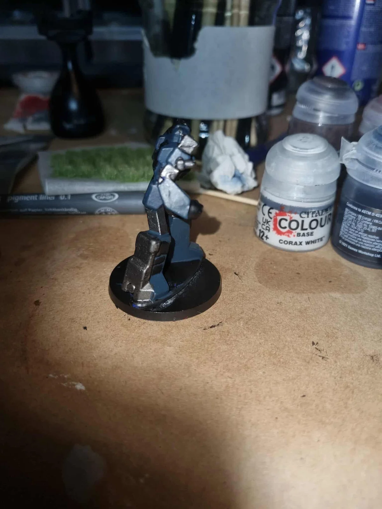

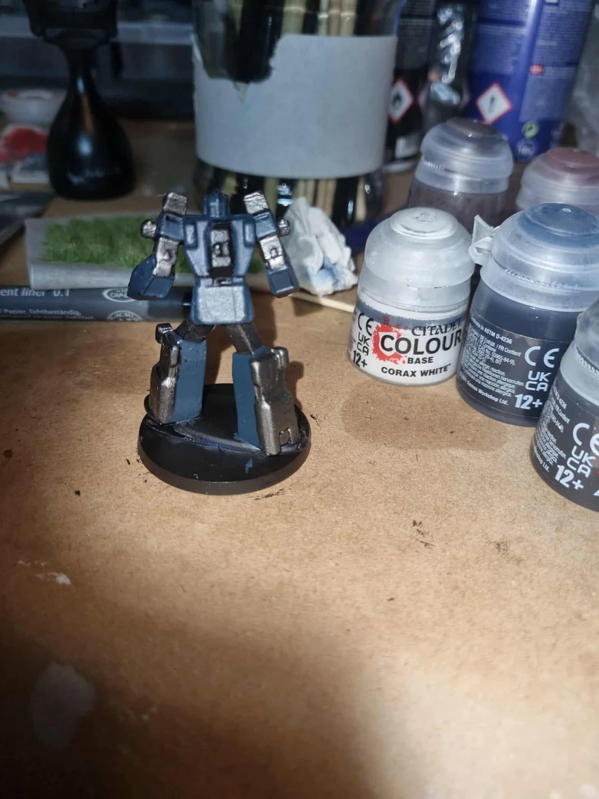

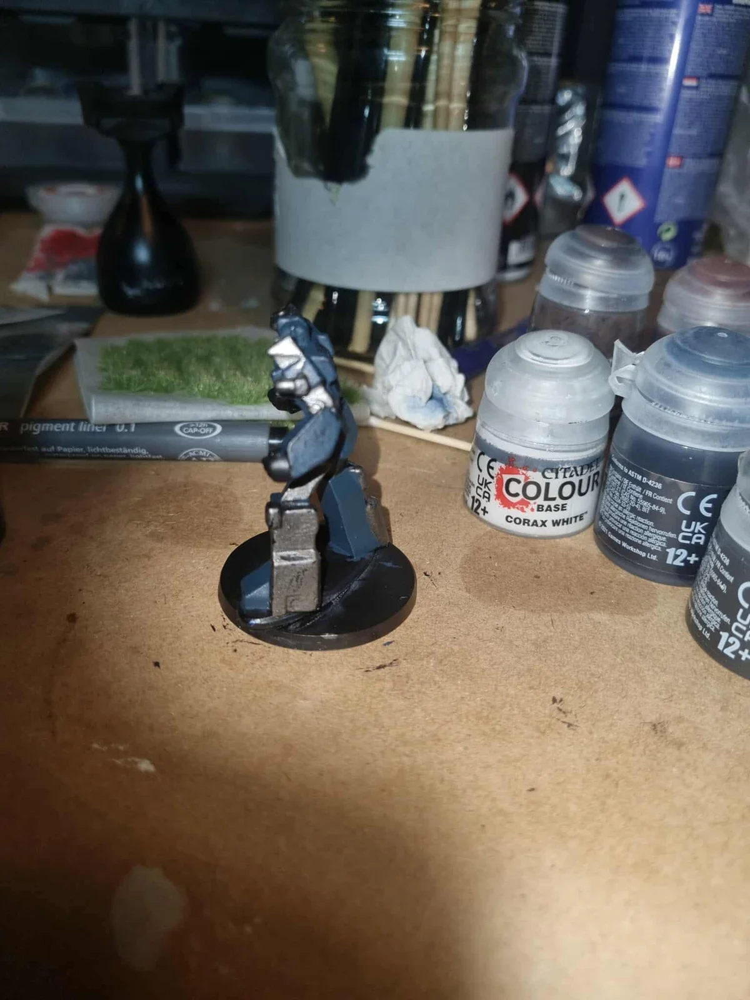

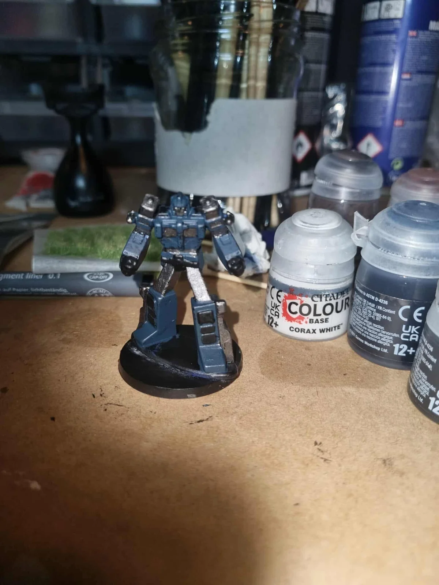

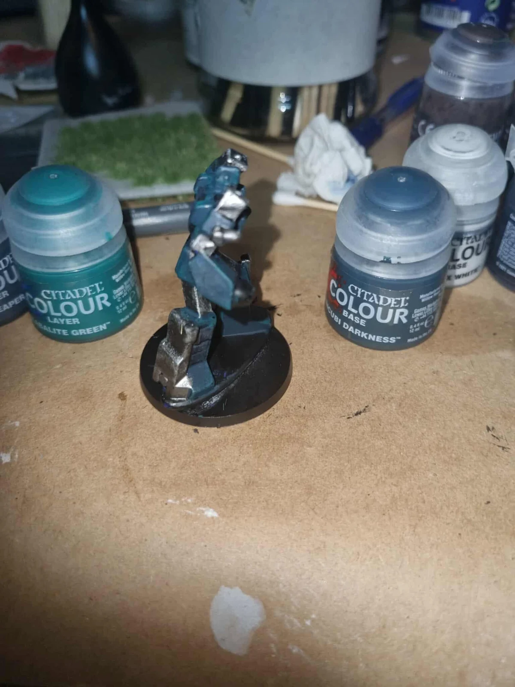

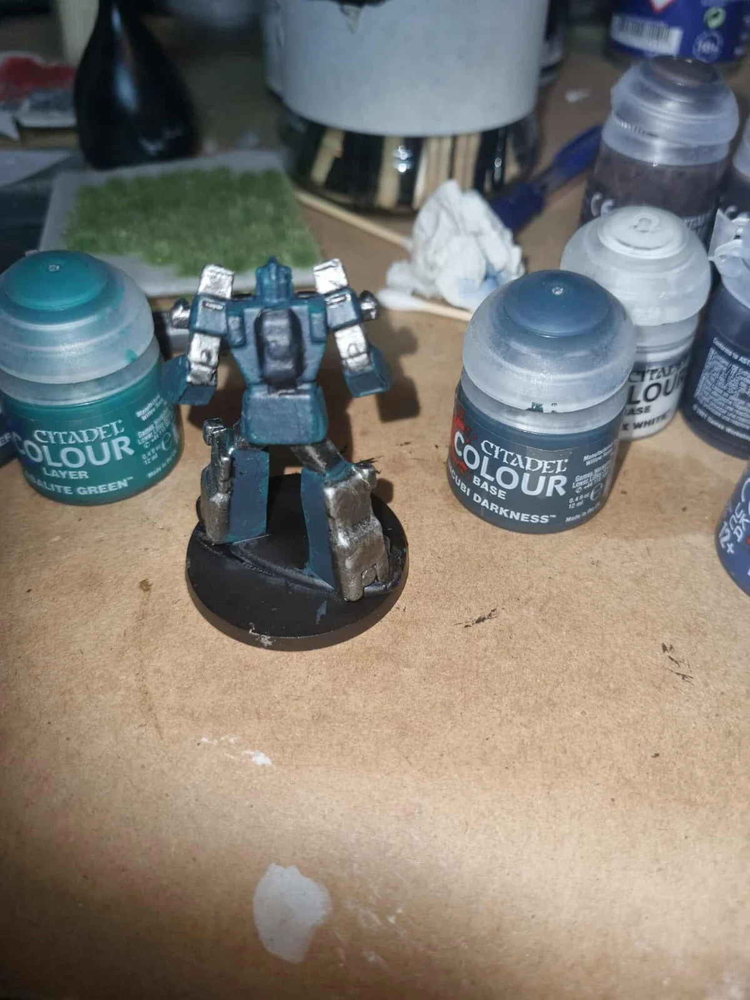

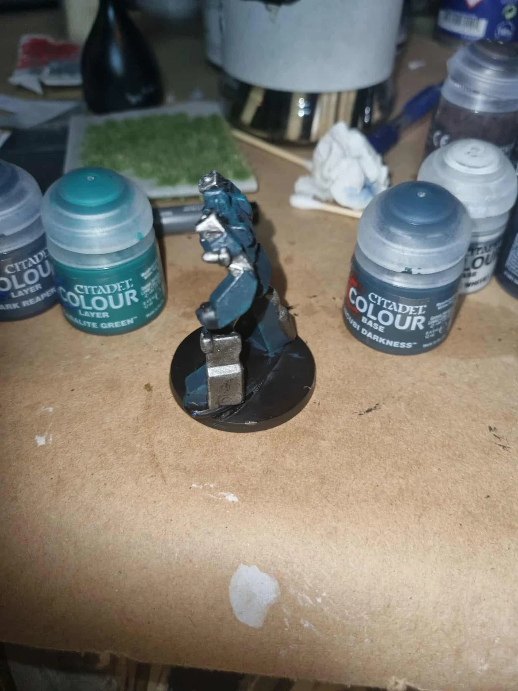

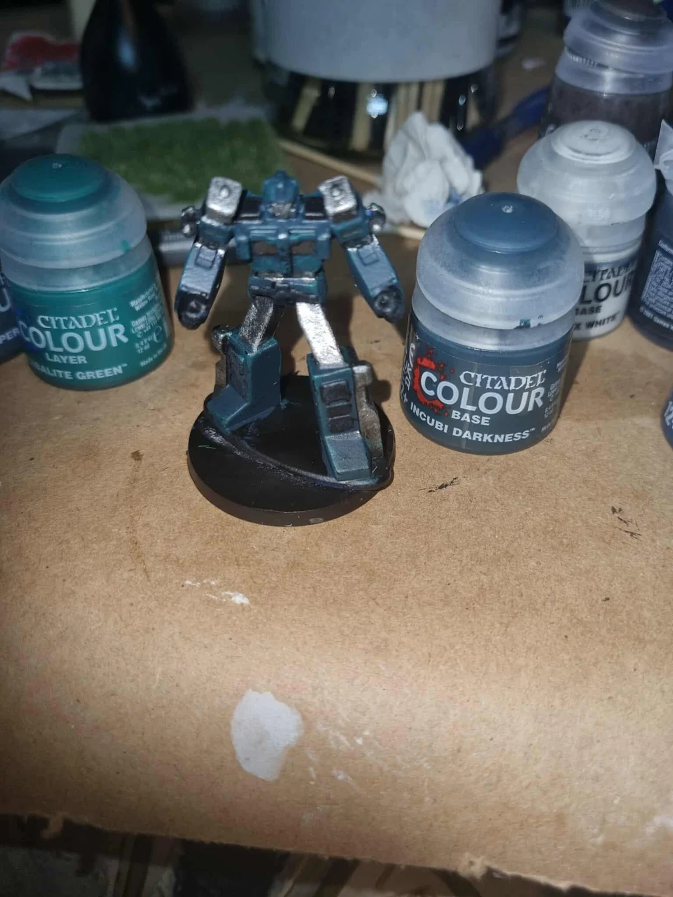
Adding the gravel base
Four views with stones added around the feet, including a front view of the green eyes.

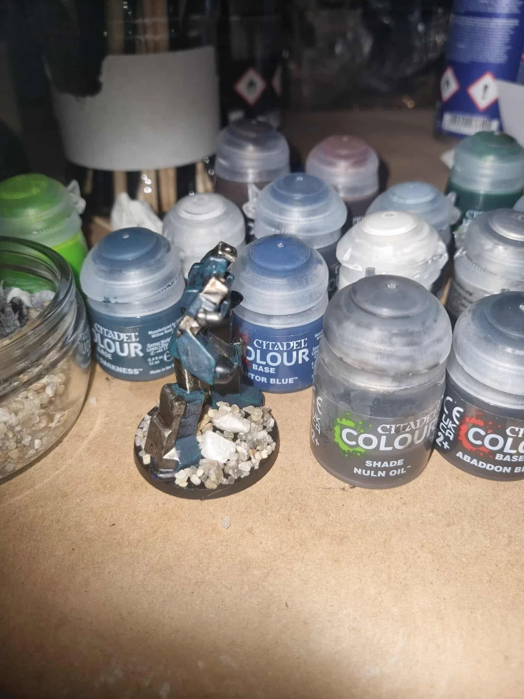

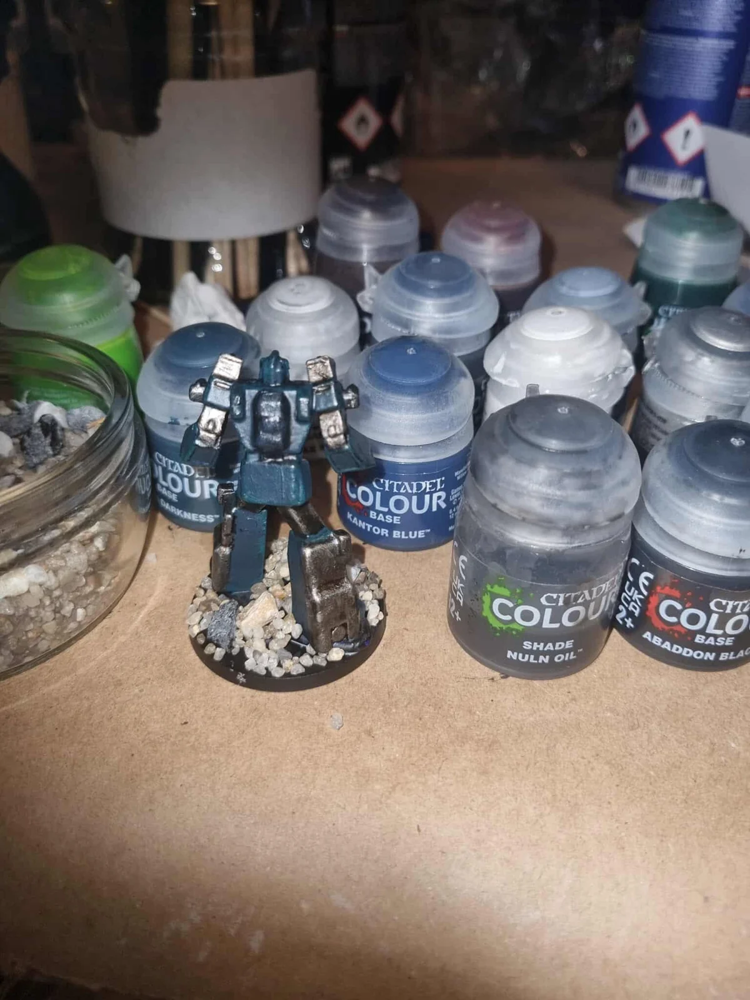

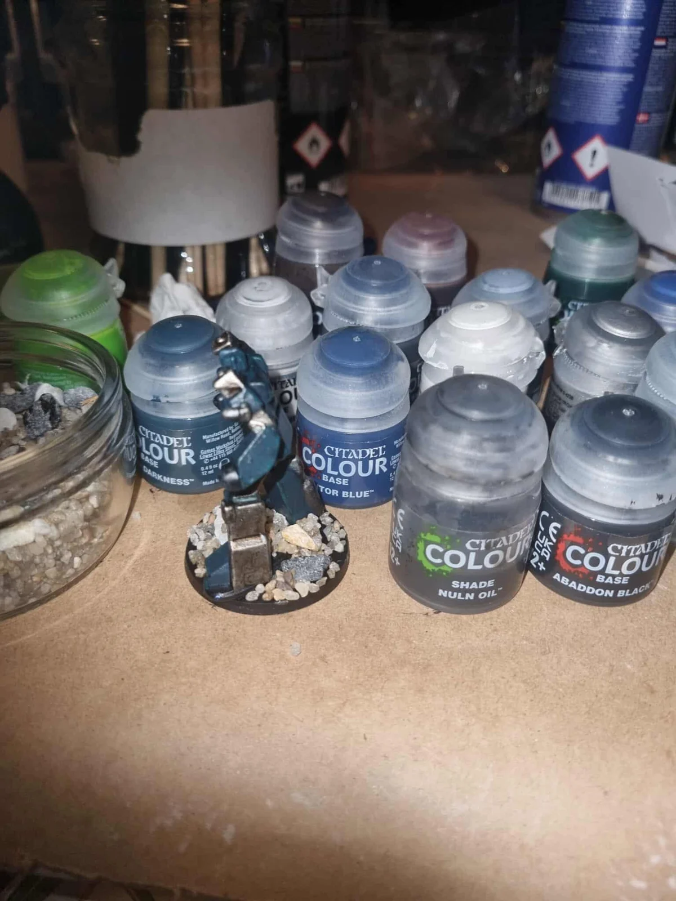

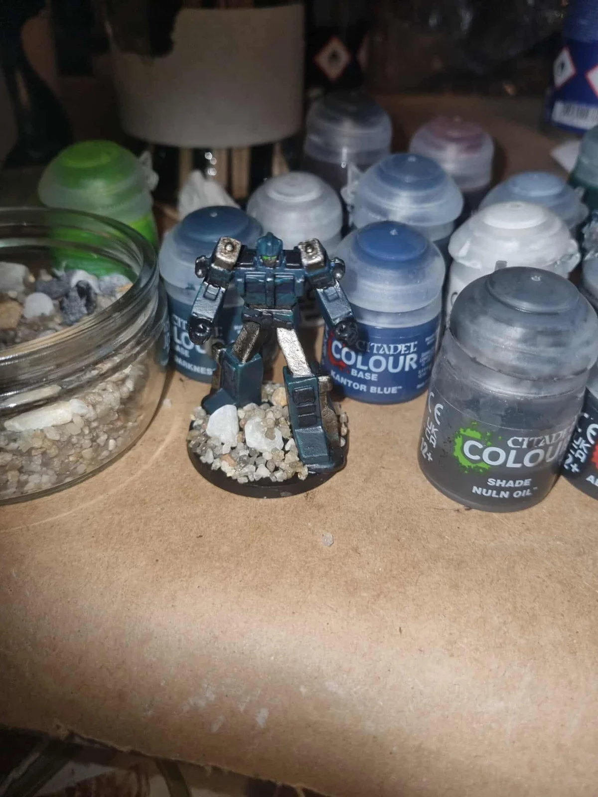